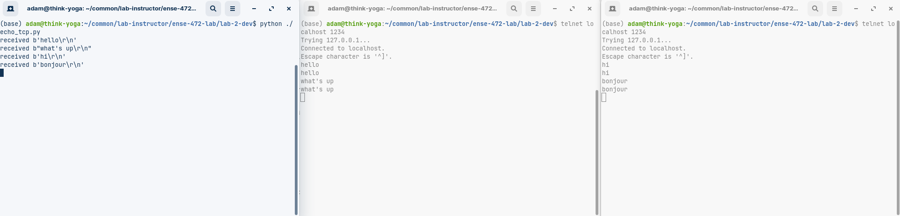
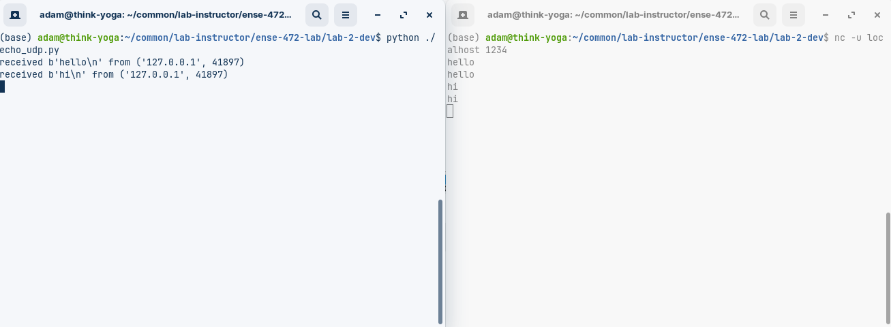
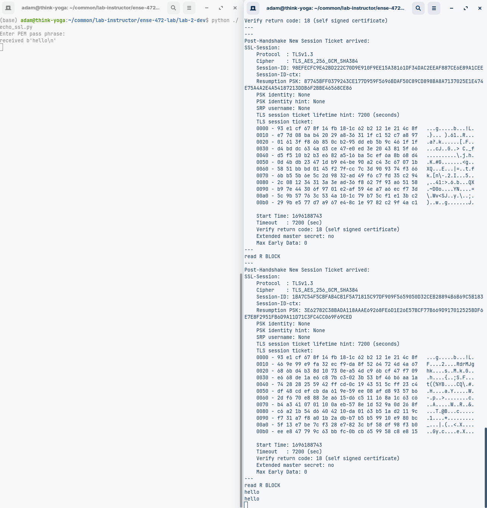

Last week we saw sockets in python, a very low level interface for programming network applications. While this helps you to understand how the operating system handles these tasks, there were some significant challenges!
- It was very low level - you needed to manage your own sockets entirely
- There was somewhat inconsistent behaviour between Windows and Linux environment, e.g. with catching Socket errors
- Python still only supports Blocking Input, unless you create (or use a library) which performs some Socket redirection type stuff
- In order to keep your application responsive, you needed to do multithreading, which also involved keeping your memory secure and preventing race conditions
The Twisted Library in python aims to solve some of these problems. Why Twisted?
- A FOSS (MIT-licensed) project since 2001
- Event-Driven - we are back to a single thread, however we can try to not block when we don’t need to so that the application remains responsive
- Influential - the
deferred system they popularized would go on to inspire similar methods, such as promises, which would be used jQuery, dojo, Node.js and JavaScript
- Supports unit Testing supported with
twisted.trial
Parts of Twisted
- The Reactor
- This is the event-driven loop
- Wait for events, dispatch them to callbacks that are waiting for those events
- Types of events - network events, filesystem events, timers, and these will be efficient implementations on top of OS-specific mechanisms
- Transport
- The smallest connecting code between between two endpoints
- Akin to sockets, but again, higher level abstraction (TCP, UDP, SSL)
- Transport API functions -
write, writeSequence, loseConnection, getPeer, getHost
- Protocol
- Describe how different network events work together asynchronously
- HTTP, IMAP, IRC, DNS
- Protocol callback functions -
makeConnection, connectionMade, dataRecieved, connectionLost
- Transports and protocols are decoupled.
- This makes testing and code-reuse easier
- We’ll see this in the next section where we swap out some protocols for different functionality
TCP Echo Server
Let’s create an echo server, as we did last lab. This is a server which simply sends back any data sent to it:
echo_tcp.py
from twisted.internet import protocol, reactor, endpoints
class Echo(protocol.Protocol): # The brackets means we are extending their class
def dataReceived(self, data): # This callback will run when we recieve data
print(f"received {data!r}") #print it out!
self.transport.write(data) # Write that data back to our transport!
class EchoFactory(protocol.Factory): # Rather than use a constructor, we will use a Factory
def buildProtocol(self, addr):
return Echo()
# Registers callback function EchoFactory() to listen to new tcp connections on port 1234
endpoints.serverFromString(reactor, "tcp:1234").listen(EchoFactory())
reactor.run()
Run your server with
python3 echo_tcp.py
This is server code, we will need a client to test it.
- Let’s use Telnet to send it a message, and you will get a message back!
telnet localhost 1234
hint: Exit telnet with Ctrl+], then q<enter>
Note that when we were dealing with sockets, it was a significant challenge to make the server work for multiple clients at once. Try multiple clients with this server and see how it goes!

TCP is a secure communications protocol, which means that a sophisticated set of handshakes will be performed to establish connection between the client and the server. After that messages will be sent and delivered reliably to and from the server and the client. Finally a set messages will be sent to close the connection to the server.
UDP Echo Serer
In Twisted, tt is relatively easy to change the protocol. Here is an example of an equivalent server using UDP:
echo_udp.py
from twisted.internet import reactor, protocol, endpoints
# We'll use the Datagram Protocol now
class Echo(protocol.DatagramProtocol):
# datagram Protocols need to identify who we are!
def datagramReceived(self, data, addr):
print(f"received {data!r} from {addr}")
self.transport.write(data, addr)
# UDP does not use streams, instead we register callbacks to handle as they come in
reactor.listenUDP(1234, Echo())
reactor.run()
Again, you may run this with
python3 echo_udp.py
UDP cannot be connected through Telnet, but on linux, you can use Netcat utility
nc -u localhost 1234

This protocol is optimized for speed rather than reliability, and will thus not send all of the extra control packets. However, if a packet is missed, there is no way to know based on the protocol, so the application must handle this.
SSL Echo Server
So far we have had unencrypted traffic to our server. Let’s set up the same server using SSL.
We are going to need a private key as well as a self-signed certificate:
openssl req -newkey rsa:2048 -keyout domain.key -x509 -days 365 -out domain.crt
Enter a passphrase for the PEM. Don’t forget it - you will need it every time you spin up the server when you use the key! You are going to be self-signing this certificate, so you may fill out the fields as follows.
Now we need to create our server:
echo_ssl.py
from twisted.internet import protocol, reactor, endpoints, ssl
class Echo(protocol.Protocol): # The brackets means we are extending their class
def dataReceived(self, data): # This callback will run when we recieve data
print(f"received {data!r}") #print it out!
self.transport.write(data) # Write that data back to our transport!
class EchoFactory(protocol.Factory): # Rather than use a constructor, we will use a Factory
def buildProtocol(self, addr):
return Echo()
context = ssl.DefaultOpenSSLContextFactory("domain.key", "domain.crt")
reactor.listenSSL(1234, EchoFactory(), context)
reactor.run()
Connecting to an SSL server is beyond the powers of a Telnet client. Let’s try the OpenSSL client instead:
openssl s_client -connect localhost:1234
You will find this is a very verbose application, displaying all of the data that was exchanged, including the certificate (which contains the public key) and the session ticket. However, from an end user perspective we will not be able to tell any difference!

This is an end-to-end encrypted protocol. We will